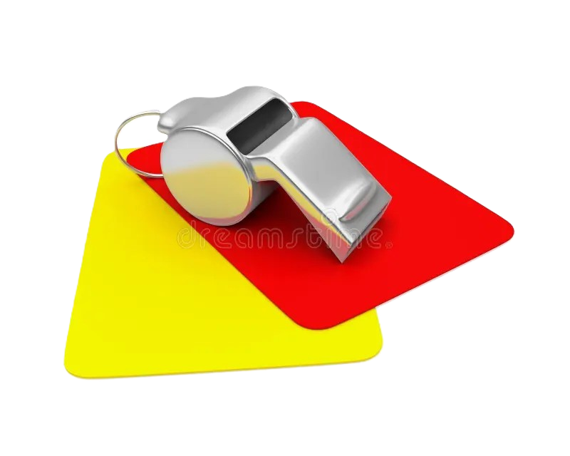

VENERDI’: preparazione borsone
"Fare il borsone con concentrazione è fondamentale per un arbitro.
È il momento in cui ti assicuri di avere tutto ciò che serve per dirigere la partita al meglio.
Quando prepari il borsone con attenzione, stai già entrando nella mentalità giusta per la partita. Stai dicendo a te stesso che sei pronto, che hai fatto tutto il possibile per essere preparato.
La concentrazione nel fare il borsone ti aiuta a ridurre lo stress e l'ansia, permettendoti di focalizzarti sul gioco.
È un gesto che ti prepara a essere presente sul campo, a prendere decisioni giuste e a mantenere il controllo.
Non è solo un compito meccanico, è un momento cruciale della tua preparazione."
È il momento in cui ti assicuri di avere tutto ciò che serve per dirigere la partita al meglio.
Quando prepari il borsone con attenzione, stai già entrando nella mentalità giusta per la partita. Stai dicendo a te stesso che sei pronto, che hai fatto tutto il possibile per essere preparato.
La concentrazione nel fare il borsone ti aiuta a ridurre lo stress e l'ansia, permettendoti di focalizzarti sul gioco.
È un gesto che ti prepara a essere presente sul campo, a prendere decisioni giuste e a mantenere il controllo.
Non è solo un compito meccanico, è un momento cruciale della tua preparazione."

⬅ Torna alla Home | Giorno successivo ➡